Somos una empresa de profesionales de la publicidad con amplia experiencia en los diferentes segmentos del mercado.
Contamos con un equipo capacitado para lograr que tu marca tenga el mas alto impacto.

Espectaculares
Los Unipolares, las Carteleras y
los Muros, son un medio
selectivo para lograr presencia de
marca e imagen por la cantidad
de impactos que generan
colocados en sitios estratégicos
haciendo un recordatorio diario
de 24/7 de la marca al
consumidor.
Television
Es un medio poderoso y con un
gran impacto visual.
El prestigio y el glamour de la
televisión puede realzar su
mensaje.
Algunos la consideran la gran liga
de la publicidad.
Radio
Ofrecemos a nuestros clientes
los elementos necesarios para el
desarrollo de su campaña, en las
radiodifusoras de mayor impacto
a nivel nacional, regional y local.
Prensa y revistas
Flexibilidad sin limite de tiempo,
buena cobertura del mercado
local, amplia aceptación y alta
credibilidad.
La publicidad en revista es la que mayor lectura tiene dentro de los medios, ya que se trata de un articulo que se revisa con toda calma.
La publicidad en revista es la que mayor lectura tiene dentro de los medios, ya que se trata de un articulo que se revisa con toda calma.
Medios Digitales
Nuestras páginas cumplen objetivos específicos definidos entre el cliente y nosotros. Sabemos como posicionarlas en internet ante el mercado adecuado generando visitas calificadas por lo tanto nuevas ventas.
Medios Alternos
Los Autobuses, las Vallas Fijas y
las Vallas Móviles son un medio
muy fuerte , ya que se
encuentran circulando durante
todo el día, por las principales
calles y avenidas de las ciudades,
captando la atención tanto de
pasajeros como de
automovilistas y peatones,
cubriendo zonas de interés.
¿Tienes dudas? contactanos.